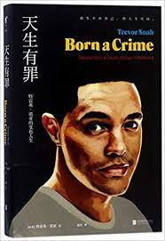

Forbidden Identity
In my opinion if I asked to change the title of born a crime book i will call it as “Forbidden
Identity” because THis title can express the an iddentity that isn't
allowed or accepted in the society due to cultural,political
and also caltural reasons and also this phrase can express the struggle to live in forbidden
environment,addvocating for inclusivness and acceptance in that environment.
Abel wanted a traditional marriage
with a
traditional wife… but he
never fell in love with subservient
women… 'He only wants a woman
who is free because his
dream is to put her in a cage.
"Abel wanted a traditional marriage with a traditional wife...but he never fell in love with subservilent women...He only wants a woman who is free bcause his dream is to put her in acage." This quote in Traver noah born a crime book shows Abel wanted a woman who he can control but hegot a true opposite of he wanted because Patricia was a woman used to doing what she wanted she was independent and confident about what she does.The quote can be related to gender roles in today's sociaity while many women are still responsible for specific roles especially in home responsiblities while men may have the responsibility to be the provider and control a dominant position. The pressure can create tention in relationships for example, If we see some ethiopian men might desire tradition girl valuing family ,respect and religion however attracted to a modern girl’s independent and confidence.This causes dissatisfaction and misunderstanding in the relationship because of the opposite desires according to tradition woman desire for social acceptance and also personal desire in modern woman. Abel’s desire toward Patricia shows that people are attracted to strong personalities. A woman who knows her choice,standard and a woman who has confidence,who believes inherself is attractive in nature, because people are attracted to people who believe in themselves.The reason that abel wants a woman who is traditional was due to his dream to put her in a cage this can show sexism insights naw a day marige maight prevent for womens’ growth even if there is nocontrol of men over women.Domestic responsibilities and attitude can prevent womens growth we can see points such as learning after marriage, and also giving birth.because of social expectation,child care burden,carrer interruption because of giving birth this all causes low development of women after marriage.so that it is not bad if we call it hidden cage.
Forbidden Identity
In my opinion if I asked to change the title of born a crime book i will call it as “Forbidden
Identity” because THis title can express the an iddentity that isn't
allowed or accepted in the society due to cultural,political
and also caltural reasons and also this phrase can express the struggle to live in forbidden
environment,addvocating for inclusivness and acceptance in that environment.
Leave a comment